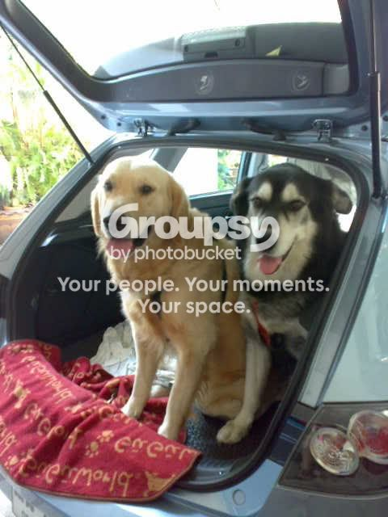

ขอบคุณทุก Commentจ้า ^.^
ซอสเดาเกือบถูกว่าเวลกันเนอร์ ฮ่าๆๆ
กลับมาสไตร์เกอร์แล้ว ต้องเวลไป90 เพราะขี้เกียจหาอาวุธให้มันถือ มีแต่อาวุธ90เลยน่ะ = ="
กับ พี่ๆในริงเค้ากดกระจก7วันกัน ช่วงสงกรานต์เลยมุดหัวไปช่วยเค้าเวล เสร็จแล้วเพิ่งรู้ว่าเวลแล้วมันเหนื่อยขนาดนี้นะเนี่ย นอนไม่พอกันไปเลยทีเดียว
.......... นี่หรือเหตุผลที่ดองงาน

ดาร์คซอส ไม่เต็มตัว วาดใหญ่ไปหน่อยสุดกระดาษเลย = =a
เหมือนเอาสองเวอร์ชั่นแรกมารวมกันเลย

ภาพคู่ชู้ชื่น TaRa จ้ะ

กำ เพิ่งเห็นลืมใส่รายละเอียดชุดหญิงเลย ก๊ากก
ขอไปคุ้ยรูปดูก่อนนะจ้า ในรูปที่โพสต์ไว้ไม่แน่ใจทรงผมผู้ชาย กับชุดผู้หญิงจำไม่ค่อยได้น่ะ
เจอแล้วจะมาแก้ให้น้า = ="
หลังๆนี่รู้สึกตันเรื่องแอคชั่นคาแรกเตอร์มาก เวลาวาดตัวผู้ชายจะทำท่าแบบหญิงๆก็ไม่ได้ =w="
Little_Bear
ขอบคุณจ้า อิๆ
ไม่ต้องแอบๆ เค้าไม่กัด

peemingZaa
Thx Ja!!
kyohararikka
ขอบคุณที่ติดตามน้า
บอกไม่ต้องรีบ เดี๋ยวเสร็จเรา

..... ล้อเล่น ถ้ามีเวลาแล้วจะรีบวาดให้ค่า ><
น้องต่ายพันธุ์อะไรก็ไม่รู้ค่ะ ถามเจ้าของแล้วเค้าก็อึ้งๆ
แล้วตอบว่า......กระต่าย =_=a
เอ่อ เห็นแล้วว่าไม่ใช่หมา
รู้แต่ว่าโตแล้วมันตัวเล็กกว่ากระต่ายไทย ><
ปกติที่บ้านก็เลี้ยงกับน้องหมาอ่ะค่ะ แต่ตัวนี้เพิ่งมาและตัวเล็กมาเลยยังปล่อยไม่ได้
วันก่อนจะล้างกรงก็เลยเอาใส่ถังไว้ ให้น้องหมานั่งเฝ้าเค้าจะได้คุ้นกัน = =
แม่เจ้าประคุณ ช่างซนเหลือ(ยังดูไม่ออก แต่คิดว่าเป็นเด็กผู้หญฺง ^w^)
กระโดดออกจากถังแล้วออกวิ่ง หมาเห็นก็วิ่งตามสิคะ
ตอนแรกวิ่งตามไปเจอเธอนอนนิ่งกะพื้น นึกว่าเสร็จซะแล้ว กลัวเธอหัวใจวายเพราะพี่หมาตัวหญ่ายยย
แต่จริงๆแล้วเธอแค่หมอบแบนๆกับพื้นน่ะค่ะ(เวลาหลบภัยมันจะหมอบกับพื้น นึกเหรอว่าจะพ้น)
หมาเราก็นั่งดูเฉยๆ พอเราเดินไปใกล้หน่อยเธอก็เอาแล้ว วิ่งต่อ หมาก็วิ่งตามอีก พลาดเองที่ไม่เอาหมาเข้ากรงก่อน
ทีนี้พอไล่ทันน้องหมาก็งับเข้าให้เลย สงสัยนึกว่าของเล่น ฮ่าๆ
แต่หมาไม่ได้ลงเขี้ยว งับเฉยๆ พอจับเธอได้ปรากฏว่าน้ำลายหมาเต็มตัวเลย จึงได้ฤกษ์อาบน้ำ ณ บัดนั้น =_=
ลงรูปน้องหมา(น้อย)ซะเลย อิๆ
สรุปนี่กระทู้กลายพันธุ์ เป็นคุยเฟื่องเรื่องสัตว์เลี้ยง



 )
)